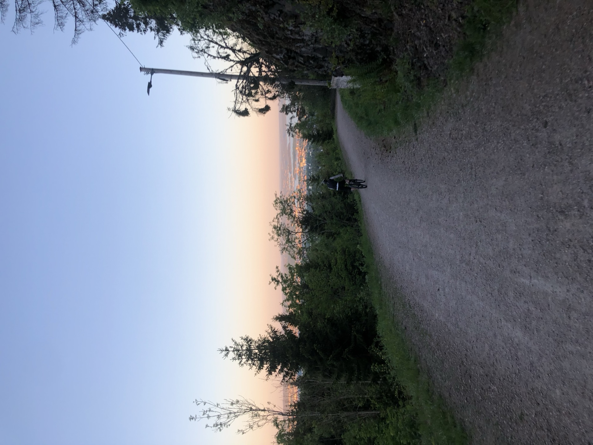

Four routes into the Nordmarka forest — from a two-hour taster to a full-day wilderness ride
Oslo sits at the edge of one of Europe's great city forests. The Nordmarka forest starts about fifteen minutes north of the centre — pine and birch as far as you can ride, lakes, ridgelines, old logging roads turned into gravel tracks. Most visitors to Oslo spend their whole trip in the city and leave without ever finding it.
We run four gravel routes into the forest. The shortest takes two hours and suits any fitness level. The longest is an 85 km full-day ride into remote country. All of them start at your hotel, all of them are private — just your group and one guide — and all of them go somewhere most tourists never reach.
| Route | Distance | Time | Level | From |
|---|---|---|---|---|
| Oslo Gravel Short | 13 km | 2 hrs | Easy — all levels | NOK 890 |
| Oslo Gravel Loop | 25 km | 3 hrs | Medium — some climbing | NOK 1 090 |
| Nordmarka Forest Ring 4 | 45 km | 4 hrs | Medium — moderate climbs | NOK 1 450 |
| Epic Marka Endurance | 85 km | 6 hrs | Challenging — good fitness required | NOK 2 475 |
These are gravel forest roads — packed dirt and stone, wide enough for two bikes side by side. No singletrack, no rock gardens, nothing that requires technical mountain biking skill. The challenge is distance and climbing, not bike handling.
The shorter routes involve gentle climbing through mixed woodland. The Ring 4 — the classic Oslo forest loop — covers 45 km of rolling terrain and stops at Kikutstua, a mountain cabin in the middle of the forest, for the traditional Norwegian waffle. The Epic Marka Endurance pushes deep into territory where you will not see another person for hours: remote lakes, sustained climbs, rocky descents.
The Oslo Gravel Short is designed for people who have never ridden gravel before. Families with older kids ride it. Guests who rode a road bike once a few years ago ride it. The e-bike option removes the fitness question entirely.
The Oslo Gravel Loop suits recreational cyclists — people who ride occasionally and are comfortable with an hour or two of effort. You will feel it the next day.
The Ring 4 and Epic Marka are for people who ride regularly and want a proper day out. The Ring 4 is challenging but achievable on an e-bike. The Epic Marka is not — that one requires genuine endurance fitness.
E-bikes are available on all four routes. On the shorter routes they make the ride more relaxed. On the Ring 4 they open the tour up to riders who would find 45 km of forest climbing heavy work. Rental from NOK 349 — mention it when you enquire and we will have the right bikes ready.
Every gravel tour is private. Your guide picks you up at your hotel, rides with your group only, and sets the pace to match the slowest rider in your group — or the fastest, if everyone is keen. Maximum 8 riders per booking.
Use the form below. Tell us which route you are interested in, how many riders, and your preferred date. If you are unsure which route fits your group, describe your fitness level in the message and we will recommend something. We reply within 24 hours.
No. Gravel bikes and e-bikes are available to rent from NOK 349. Your guide can advise on which bike suits the route and your fitness level. Just mention what you need when you enquire.
The Oslo Gravel Short (13 km, 2 hours) is suitable for all fitness levels including families. The terrain is gentle gravel with easy climbing through pine and birch forest. An e-bike makes it even more accessible. The Oslo Gravel Loop (25 km, 3 hours) involves real climbs and suits recreational cyclists who ride occasionally.
Nordmarka is the forested area immediately north of Oslo — roughly 1,700 square kilometres of pine and birch woodland, lakes and ridgelines. It starts about 15 minutes by bike from the city centre. Most visitors to Oslo never find it. Read more in our blog post: The Oslo Forest Most Visitors Never Find.
Yes. E-bikes are available on all four gravel routes and make the forest accessible regardless of fitness level. They are particularly useful on the Nordmarka Forest Ring 4 (45 km) where the climbing is sustained. Rental from NOK 349.
Oslo Gravel Short: 13 km, 2 hours, easy — a gentle taste of the forest, suitable for all. Oslo Gravel Loop: 25 km, 3 hours, medium — rolling terrain with real climbing. Nordmarka Forest Ring 4: 45 km, 4 hours, medium — the classic Oslo forest loop with a waffle stop at Kikutstua mountain cabin. Epic Marka Endurance: 85 km, 6 hours, challenging — deep wilderness, remote lakes, sustained climbing. Good fitness required for the last two.
Not technical at all. These are gravel forest roads — no singletrack, no rock gardens, no drops. The challenge is distance and climbing. A road cyclist or confident recreational rider will be comfortable on any route.
Guide availability is limited. Tell us your preferred date and group — we'll match you to the right route and confirm within 24 hours.